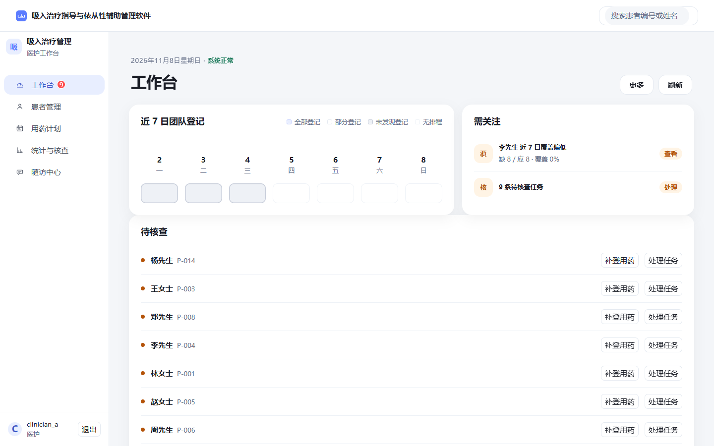
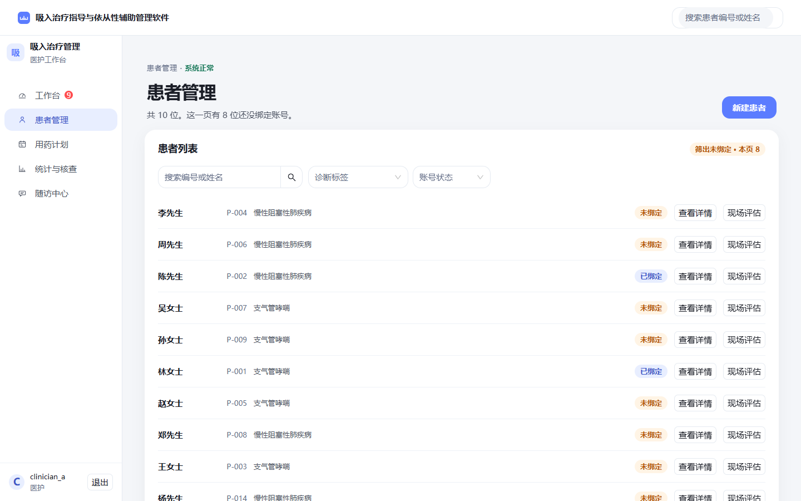
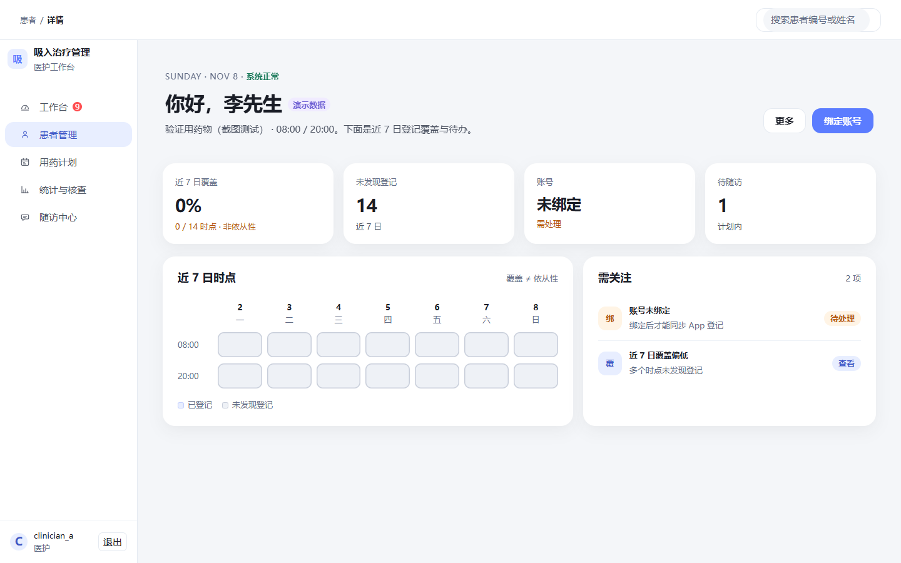
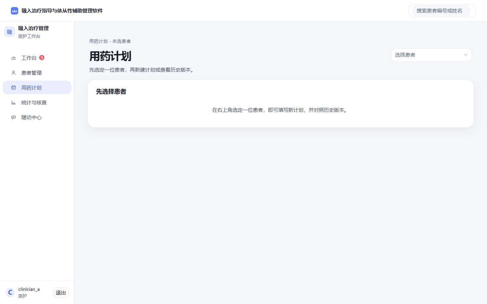
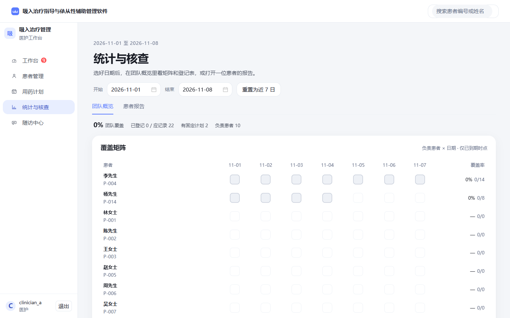
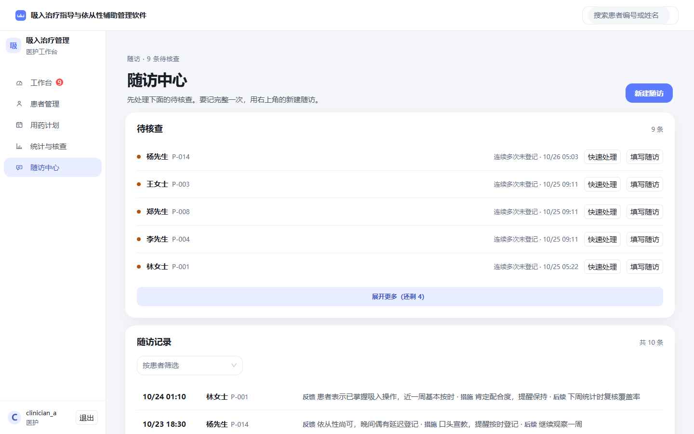

认证
医护端

查看原图02 · 工作台刻度|需关注 + 待核查队列；字号 32/18/15/13

查看原图03 · 患者管理表是主角：搜索/筛选在表头，未绑定芯片一键筛

查看原图04 · 患者详情P-004 李先生：Hero + 近7日时点刻度 | 需关注

查看原图05 · 用药计划编辑患者选择在 Hero，左表单右历史版本

查看原图06 · 统计与核查覆盖矩阵（软蓝/浅灰刻度同款）+ 登记情况排行

查看原图08 · 随访中心队列干活页：待核查 + 记录一行三列，默认 5 条可展开